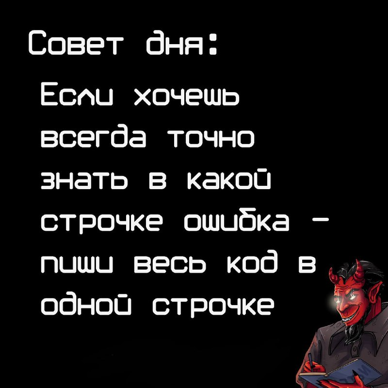
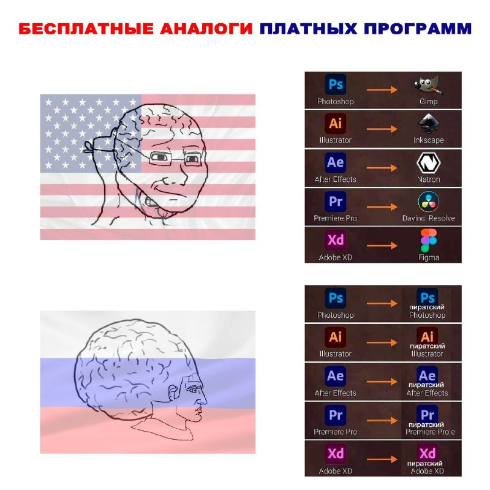
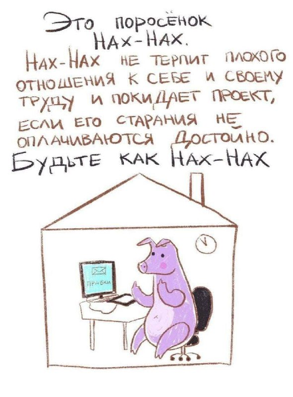
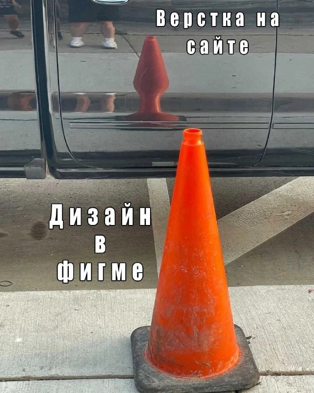

Приходят к программисту гости, а у него шум, гам. В
общем, ссорятся между собой
его
дети. Гости спрашивают программера: — А чего у тебя дети так орут? А он им в ответ, оторвавшись от компа:
—
Конфликт версий.
Для программиста монитор — это реальный рабочий стол, системный блок —
журнальный,
а клавиатура — обеденный.
Один программист другому: — Вот представь: — У тебя есть 1000 рублей... Или, для
круглого счета, пусть у тебя 1024.
Работа программиста и шамана имеет много общего — оба бормочут непонятные слова,
совершают непонятные действия и не могут объяснить, как оно работает.
Сидят два программиста в кафе. Мимо идет шикарная телка. — Классные у нее
properties, — говорит один. — Вчера проверял... Все read only, — с грустью отвечает другой.